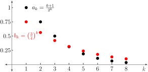

Section 7.6 The Ratio Test
Motivating Questions
How can we test convergence without a known series to which it is useful to compare?
What does it mean to ask if a series is approximately geometric?
So far, we've mostly considered series with exclusively nonnegative terms that have straightforward comparisons. In this section, we will consider a powerful test to compare many series to geometric series using the ratios of consecutive terms.
Consider a series \(\sum_{k=1}^{\infty} a_k\text{.}\) We know that \(\lim_{k \rightarrow \infty} a_k = 0\) is not a sufficient condition for the series to converge. Not only do we need \(a_k \rightarrow 0\text{,}\) but we need \(a_k \rightarrow 0\) quickly enough. For example, consider the series \(\sum \frac{1}{k}\) and \(\sum \frac{1}{k^2}\text{.}\) We know that \(1/k \rightarrow 0\) and \(1/k^2 \rightarrow 0\text{.}\) However, only the series \(\sum \frac{1}{k^2}\) converges. The series \(\sum \frac{1}{k}\) diverges because the terms in the sequence \(\{ 1/k \}\) do not approach zero fast enough as \(k \rightarrow \infty\text{.}\) The Ratio Test compares the \((k+1)\)st term, \(a_{k+1}\text{,}\) with the \(k\)th term, \(a_k\text{.}\) If the ratio of these, \(\frac{a_{k+1}}{a_k}\text{,}\) is "small enough" then we are assured that the terms are going to zero "fast enough" and hence the series converges.
Preview Activity 7.6.1.
Consider the series \(\sum_{k=1}^{\infty} \frac{k+1}{2^k}\text{.}\)
Define a function \(f(x) = \frac{x+1}{2^x}\) on the domain \((0,\infty)\text{.}\) Graph \(f(x)\text{.}\) Then, compute \(\lim_{x \rightarrow \infty} f(x)\text{.}\)
Does the \(k\)th term of the series, \(a_k = \frac{k+1}{2^k}\text{,}\) approach zero as \(k \rightarrow \infty\text{?}\) Does the Divergence Test allow you to conclude that the series \(\sum_{k=1}^{\infty} \frac{k+1}{2^k}\) diverges? that it converges? Explain.
-
Define a new sequence \(\{ b_k \}\) where \(b_k = \left( \frac{3}{4} \right)^k\) for \(k \geq 1\text{.}\) If the pattern shown in Figure 7.6.1 continues, for what value of \(K\) does it appear to be true that
\begin{equation*} \frac{k+1}{2^k} < \left( \frac{3}{4} \right)^k \end{equation*}for all \(k \geq K\text{?}\)
Figure 7.6.1. Plots of sequences \(\{ a_k \}\) and \(\{ b_k \}\) where \(a_k = \frac{k+1}{2^k}\) and \(b_k = \left( \frac{3}{4} \right)^k\text{.}\) Does part (b) suggest the series \(\sum_{k=1}^{\infty} \frac{k+1}{2^k}\) converges or diverges? By what test?
For \(1 \leq k \leq 8\text{,}\) compute the value of the ratio \(\frac{a_{k+1}}{a_k}\text{.}\) Is each ratio strictly less than \(1\text{?}\) Is it always less than or equal to \(\frac{3}{4}\text{?}\) If so, explain why. If not, give the value of \(k\) for which it fails to be true.
If a sequence \(\{ a_k \}\) is such that for some number \(r < 1\) it is true that \(\frac{a_{k+1}}{a_k} \leq r\) for all \(k\text{,}\) explain why \(a_{k+1} \leq r^k a_1\) and hence why \(\sum_{k=1}^{\infty} a_k\) converges.
Subsection 7.6.1 The Ratio Test
The Limit Comparison Test works well if we can find a series with known behavior to compare. But such series are not always easy to find. In this section we will examine a test that allows us to examine the behavior of a series by comparing it to a geometric series, without knowing in advance which geometric series we need.
Activity 7.6.2.
Consider the series defined by
This series is not a geometric series, but this activity will illustrate how we might compare this series to a geometric one. Recall that a series \(\sum a_k\) is geometric if the ratio \(\frac{a_{k+1}}{a_k}\) is always the same. For the series in (7.15), note that \(a_k = \frac{2^k}{3^k-k}\text{.}\)
-
To see if \(\sum \frac{2^k}{3^k-k}\) is comparable to a geometric series, we analyze the ratios of successive terms in the series. Complete Table 7.6.2, listing your calculations to at least 8 decimal places.
Table 7.6.2. \(k\) \(5\) \(10\) \(20\) \(21\) \(22\) \(23\) \(24\) \(25\) \(\dfrac{a_{k+1}}{a_k}\) Based on your calculations in Table 7.6.2, what can we say about the ratio \(\frac{a_{k+1}}{a_k}\) if \(k\) is large?
Do you agree or disagree with the statement: “the series \(\sum \frac{2^k}{3^k-k}\) is approximately geometric when \(k\) is large”? If not, why not? If so, do you think the series \(\sum \frac{2^k}{3^k-k}\) converges or diverges? Explain.
We can generalize the argument in Activity 7.6.2 in the following way. Consider the series \(\sum a_k\text{.}\) If
for large values of \(k\text{,}\) then \(a_{k+1} \approx ra_k\) for large \(k\) and the series \(\sum a_k\) is approximately the geometric series \(\sum ar^k\) for large \(k\text{.}\) Since the geometric series with ratio \(r\) converges only for \(-1 \lt r \lt 1\text{,}\) we see that the series \(\sum a_k\) will converge if
for a value of \(r\) such that \(|r| \lt 1\text{.}\) This result is known as the Ratio Test.
The Ratio Test.
Let \(\sum a_k\) be an infinite series. Suppose
If \(0 \leq r \lt 1\text{,}\) then the series \(\sum a_k\) converges.
If \(1 \lt r\text{,}\) then the series \(\sum a_k\) diverges.
If \(r = 1\text{,}\) then the test is inconclusive.
Note well: The Ratio Test looks at the limit of the ratio of consecutive terms of a given series; in so doing, the test is asking, “is this series approximately geometric?” If so, the test uses the limit of the ratio of consecutive terms to determine if the given series converges.
Activity 7.6.3.
Apply the Ratio Test to each series to determine if it converges or diverges. If it converges, state a geometric series that behaves somewhat similarly.
\(\displaystyle \displaystyle \sum_{k=1}^{\infty} \frac{10^k}{k!}\)
\(\displaystyle \displaystyle \sum_{k=1}^{\infty} \frac{k^k}{k!}\)
\(\displaystyle \displaystyle \sum_{k=1}^{\infty} \frac{(-1)^k (k!)^2}{(2k)!}\)
We have now encountered several tests for determining convergence or divergence of series.
The Divergence Test can be used to show that a series diverges, but never to prove that a series converges.
We used the Integral Test to determine the convergence status of an entire class of series, the \(p\)-series.
The Limit Comparison Test works well for series that involve rational functions and which can therefore by compared to \(p\)-series.
Finally, the Ratio Test allows us to compare our series to a geometric series; it is particularly useful for series that involve \(n\)th powers and factorials.
Two other tests, the Direct Comparison Test and the Root Test, are discussed in the exercises.
One of the challenges of determining whether a series converges or diverges is finding which test answers that question.
Activity 7.6.4.
Determine whether each of the following series converges or diverges. Explicitly state which test you use.
\(\displaystyle \sum \frac{k}{2^k}\)
\(\displaystyle \sum \frac{k^3+2}{k^2+1}\)
\(\displaystyle \sum \frac{10^k}{k!}\)
\(\displaystyle \sum \frac{k^3-2k^2+1}{k^6+4}\)
Subsection 7.6.2 Summary
The ratio test may be used to test convergence by comparing to a geometric series. If the absolute value of the ratio of successive terms in the sequence is less than 1, the series converges. If this ratio is larger than 1, the series diverges. When the ratio is exactly one, the series may be convergent or divergent.
Exercises 7.6.3 Exercises
1. Ratio Test Cases.
What can you say about the series \(\sum a_n\) in each of the following cases using the Ratio Test? Answer "Convergent," "Divergent," or "Inconclusive."
Convergent
Divergent
Inconclusive
Convergent
Divergent
Inconclusive
Convergent
Divergent
Inconclusive
Note: You only have two attempts at this problem.
2. Applying the Ratio Test.
Applying the ratio test to the series
you would compute
\(\displaystyle \lim_{k \to \infty} \, \biggl \lvert \dfrac {a_{k + 1}} {a_k} \biggr \rvert = \lim_{k \to \infty}\) = .
Hence the series
converges
diverges
inconclusive
Note that you will have to simplify your answer for \(\frac{a_{k+1}}{a_k}\) otherwise you will get an error message. Your answer should not contain factorials, exponents, or multiplication symbols.
3. Applying the Ratio Test II.
Applying the ratio test to the series
you would compute
\(\displaystyle \lim_{k \to \infty} \, \biggl \lvert \dfrac {a_{k + 1}} {a_k} \biggr \rvert = \lim_{k \to \infty}\) = .
Hence the series
converges
diverges
inconclusive
Note that you will have to simplify your answer for the limit or you will get an error message.
4.
Imagine you're taking an exam, and you momentarily forget exactly how the inequality in the ratio test works. You remember there's a ratio, but you don't remember which term goes on top; you remember there's something about the limit being greater than or less than one, but you don't remember which way implies convergence.
Explain why
or, equivalently,
should mean that the sum \(\sum_{k=1}^{\infty} a_k\) diverges (rather than converges).
5.
In this exercise we investigate the sequence \(\left\{\frac{b^n}{n!}\right\}\) for any constant \(b\text{.}\)
Use the Ratio Test to determine if the series \(\sum \frac{10^k}{k!}\) converges or diverges.
Now apply the Ratio Test to determine if the series \(\sum \frac{b^k}{k!}\) converges for any constant \(b\text{.}\)
Use your result from (b) to decide whether the sequence \(\left\{\frac{b^n}{n!}\right\}\) converges or diverges. If the sequence \(\left\{\frac{b^n}{n!}\right\}\) converges, to what does it converge? Explain your reasoning.
6.
There is a test for convergence similar to the Ratio Test called the Root Test. Suppose we have a series \(\sum a_k\) of positive terms so that \(a_n \to 0\) as \(n \to \infty\text{.}\)
-
Assume
\begin{equation*} \sqrt[n]{a_n} \to r \end{equation*}as \(n\) goes to infinity. Explain why this tells us that \(a_n \approx r^n\) for large values of \(n\text{.}\)
Using the result of part (a), explain why \(\sum a_k\) looks like a geometric series when \(n\) is big. What is the ratio of the geometric series to which \(\sum a_k\) is comparable?
Use what we know about geometric series to determine that values of \(r\) so that \(\sum a_k\) converges if \(\sqrt[n]{a_n} \to r\) as \(n \to \infty\text{.}\)
7.
Consider the series
Use the ratio test to show that the series converges.
-
Use summation by parts,
\begin{equation*} \sum_{k=1}^n a_k (b_{k+1}-b_k) = \left[ a_{n+1}b_{n+1} - a_1b_1 \right] - \sum_{k=1}^n b_{k+1}(a_{k+1}-a_k) \end{equation*}to find the sum of the series. Hint: Take \(a_k = k\) and \(b_k = 3^{1-k}/2\text{.}\)